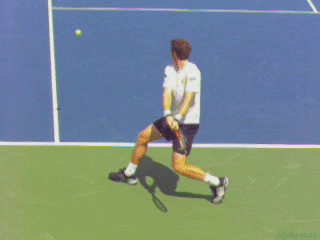
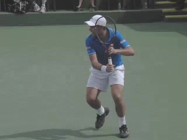
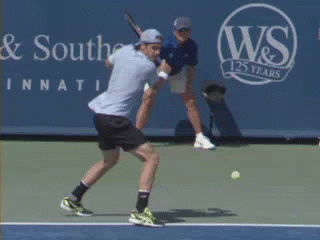
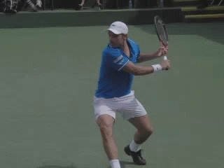
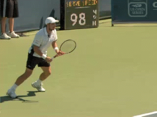
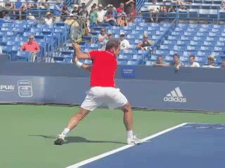
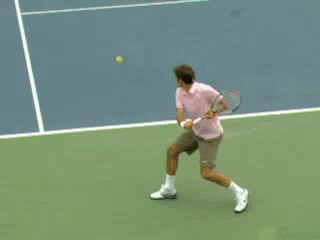
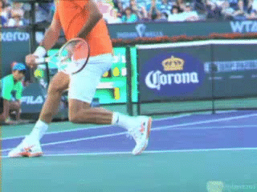

The Extreme Closed Stance: Pro One Handed Backhand¶
John Yandell

Why is the closed stance preferred by top players on the one-hander?
In the last article we looked at the surprising dominance of the closed stance on the pro two-handed backhand. (Click Here.) We found that the clear preference of the top two-handed men's players was to hit closed by taking a large diagonal cross step to the ball. We also saw that there were clear biomechanical advantages in doing so.
Is the same true on the pro one-handed backhand? Yes, and even more true. The percentage of closed stances hit by top one-handed players like Roger Federer or Stan Wawrinka or Tommy Haas is even higher than for the top two-handers.
Of course the top one-handers all hit with the other stances as well. They all hit with neutral stance, especially around the center of the court. And they all hit with open stance, especially when forced on time or deep in the court, though the percentage of open stance one-handers is the lowest of the three options.
But when the players have the choice, they hit closed, especially on balls hit around the baseline on the backhand side--in other words, the balls hit in most exchanges.

One handers hit with all stances, including neutral and open.
What Is Closed?
By closed stance I mean the players take a dramatic step across the body at an angle of about 45 degrees. At times the size of the step is huge--as much as twice shoulder width. The angle of the step can also be even more dramatic, verging on directly sideways.
Why? The same two factors as on the two-hander. First, the closed stance results in greater use of the torso in the swing. The players turn their hips and shoulders further in the preparation, and this naturally results in greater levels of hip and shoulder rotation in the forward swing.
Second, the larger step increases knee bend. This means greater coiling in the legs in the preparation, and therefore greater uncoiling in the forward swing.
This means that the top players find the advantages of increased leverage from the body and legs outweighs the alleged advantage of a neutral or square step forward into the ball, something that is often advocated to create "linear momentum" and/or "forward weight transfer."
Stay Sideways!

A diagonal cross step means greater rotation of the torso and greater uncoling of the legs in the forward swing.
Hip and shoulder rotation in the one-hander is a very interesting and also misunderstood topic. Isn't one of the keys not to over rotate in the forward swing?
Correct! A very common error especially for lower level players is to turn the hips and shoulders too far too soon, so that they are facing the net or something close to that at contact.
The classic backhand teaching model is for the shoulders to be basically perpendicular to the net at contact. This is usually taught with a neutral or square step forward into the shot.
And in fact you do see many pro one-handed shots where the torso stays essentially square through the finish. But with the closed stance, this forward rotation is often increased slightly, especially when hitting crosscourt.
This is particularly true for players with more extreme grips. They already tend to be more open at contact even with neutral stances.
So should the classic model be taught first? Possibly for many players, but not necessarily. Just look at Chris Lewit's wonderful series on the one hander. (Click Here for the current article and Click Here for the music video of his actual students.)

Torso rotation is often increased somewhat with closed stance, especially with more extreme backhand grips.
But as Chris's work shows, the key with the closed stance is holding all the technical components together. So let's see how the closed stance relates to the other core elements.
The Turn
All good one-handed backhands start the same way, with an immediate unit turn that involves the feet, hips and shoulders. In general the hitting arm and racket are along for the ride here with little independent movement.
With the classic model the shoulders turn about 90 degrees. But with the pro closed stance model, the shoulder turn continues significantly further, until the shoulders are 45 degrees to the baseline, or sometimes even further.
Note how this correlates with the stance. The turn and the step go together. The player steps across his body with the opposite or right foot. Notice how wide this step typically is.
Now imagine a line drawn along the tips of the toes. Then imagine another line drawn across the shoulders. Notice that these lines are basically parallel. That is tremendous upper body coil.

The unit turn which then continues past perpendicular with the cross step into the closed stance.
But also notice the legs and especially the bend in the knees. They can bend 45 degrees and even further, sometimes approaching 90 degrees.
This is only possible with a wider base provided by the larger diagonal cross step. Interestingly, this is a point Nick Bollettieri has made for years in describing Tommy Haas's amazing one-hander. (Click Here.)
It's no different for Federer or Wawrinka or for Richard Gasquet, or Nicholas Almagro, or Grigor Dimitrov. Again we find that great players find similar ways to maximize technical potential, regardless of what conventional coaching wisdom may say.
From the closed stance, the key elements in the forward are very similar to the more classical model. For example: a straight hitting arm before contact, a still head, great extension outward in the swing, and limited (if slightly increased) body rotation. The core mechanics are maintained and in fact enhanced by the extra coiling in the body and legs that come with the closed stance.
The Back Leg
But there is another vital point to understand about closed stance on the one-hander, and it's the same as we saw on the two. This has to do with the role of the back leg.

The increased turn and the cross step: universal for world class one-handers.
One of the trendy topics in high performance coaching for the last few years has been the importance of teaching the "recovery step." This refers to how top players typically move the back foot around to the outside, then push off to start the recovery back toward the center of the court.
The discovery of the recovery step has lead to the coaching directive to actively and intentionally swing the foot around. Unfortunately, following this advice can destroy your backhand.
As with any piece of teaching theory allegedly based on the pros, it's important to understand what top players actually do, when they do it, and especially, in what sequence. In my opinion that is only possible with the study of high speed video.
Watch the great one handers. The back foot doesn't come around until the players have extended the swing all the way forward and outward.
In fact, the back foot typically stays well to the right of the front foot with the sole of the shoe sometimes actually facing the side fence. Sometimes it kicks further backwards. It can even move forward towards the net during the course of the forward swing!

Watch how the rear foot stays behind and actually on the player's right side til after extension before coming around in the "recovery" step.
Why? Try it for yourself. The positioning of the back leg controls the torso rotation. This allows the rotation to unfold with the right timing, and keeps it from becoming too extreme.
We know the shoulders need to stay relatively sideways during the contact and followthrough, regardless of stance. That's impossible if you are trying to intentionally throw your back foot around.
Moving the recovery foot too soon causes the torso to open too soon, makes the contact late, and often leads to hitting with a bent arm or elbow lead. Not only is the effectiveness of the stroke drastically reduced, there is more stress on the hitting arm, increasing the chance of tennis elbow.
And even at the pro level, there are many balls where the outside recovery step never happens and the movement back toward the middle appears to initiate with the right or inside foot. That's critical to understand--you don't have to make a swinging recovery step on every ball!
Recovery footwork is, of course, very important for players at all levels. Ironically, trying to develop a closed stance, especially with a "pro" recovery step can be worse than following the simpler classical model.
Lower level players will often simply charge through the shot with the front foot, swing the back foot out and around and end up hitting with the torso far too open. Kerry Mitchell calls this tendency "chasing" the ball in his excellent article on teaching the backhand to club players. (Click Here.)

The inside or right foot often initiates the recovery even at the pro level.
There is nothing inherently wrong in trying to develop a pro style closed stance on either the one-handed or two-handed backhand. But keep in mind the more fundamental elements in the stroke are more important.
The Open Stance Paradox
For players who over rotate, as Kerry's article shows, working on hitting open stance is, paradoxically, often the key to understanding correct movement and positioning. In fact it can be the key to eventually progressing to the advanced diagonal step--or even just developing an effective, more basic neutral stance.
What About the Women?
So that's it for the pro men on the backhand stances. In the next article we'll look at the variety of stances in the women's game, which for some players are similar to the men, but for others are quite different. We'll see how grip and hitting arm positions affect and in some cases create these differences, and what that all means.
Eventually we'll do a teaching article about the backhand stances and correcting common problems. We'll discuss which stance to develop and when, depending on your level of play, the level of development in your stroke, and your grip and hitting arm configurations. Stay tuned for that!

John Yandell is widely acknowledged as one of the leading videographers and students of the modern game of professional tennis. His high speed filming for Advanced Tennis and Tennisplayer have provided new visual resources that have changed the way the game is studied and understood by both players and coaches. He has done personal video analysis for hundreds of high level competitive players, including Justine Henin-Hardenne, Taylor Dent and John McEnroe, among others.
In addition to his role as Editor of Tennisplayer he is the author of the critically acclaimed book Visual Tennis. The John Yandell Tennis School is located in San Francisco, California.